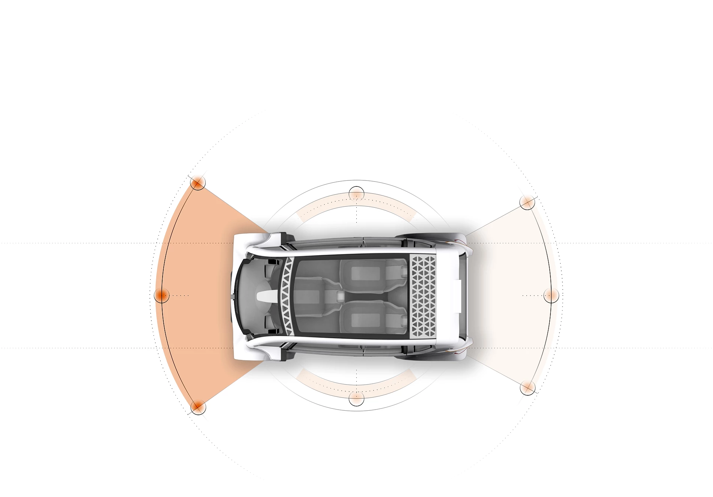

PERCEPTION ENABLED TECHNOLOGY
Environmental Perception
Environment perception is a fundamental function to enable autonomous vehicles, which provides our vehicle with crucial information on the driving environment, including the free drivable areas and surrounding obstacle's locations, velocities, and even predictions of their future states. Based on the sensors implemented, the environment perception task can be tackled by using LIDARs, cameras, or a fusion between these two kinds of devices. Some other traditional approaches may also involve the use of short/long-range radars and ultrasonic sensors.
LIDAR
LIDAR refers to a light detection and ranging device, which sends millions of light pulses per second in a well-designed pattern. With its rotating axis, it is able to create a dynamic, three-dimensional map of the environment. LIDAR is the heart for object detection for most of the existing autonomous vehicles.